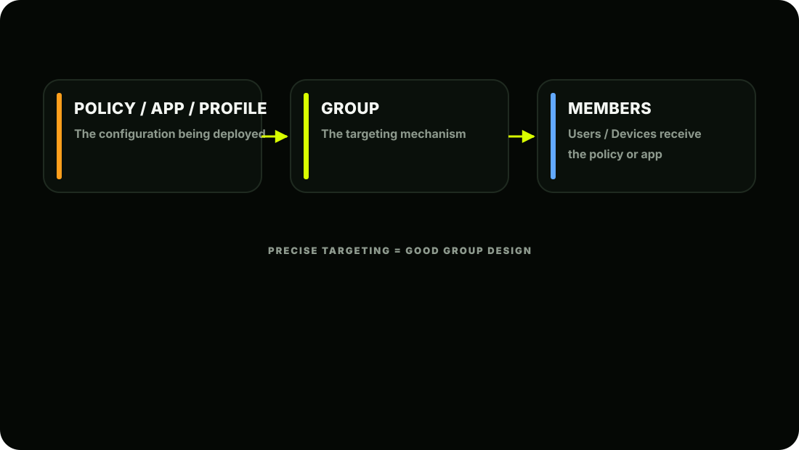
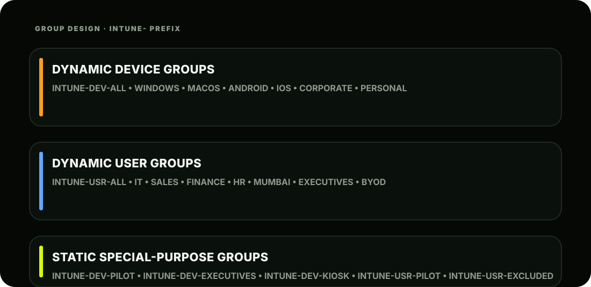

The Scene
It's 9 AM. Ashpak opens the Entra ID portal. He can see all 1,000 AshScript employees are now synced from on-premises AD. Passwords work. Users can sign in. But then Riya calls:
"Ashpak, I need you to deploy a Wi-Fi profile to all Windows laptops, a VPN app to the Sales team only, a compliance policy to all corporate devices, and a special restrictive policy to the Executive team. Oh; and nothing should touch our 20 test devices until we've verified it works."
Ashpak writes it all down. Then he looks at his Entra ID groups panel. The 47 groups that synced from on-prem AD are a mess; named things like GRP_USR_SALES_01 and SG-IT-DEPT-MUMBAI . They were built for GPO targeting years ago. They won't work cleanly for Intune.
He opens a blank document and starts designing AshScript's cloud group architecture from scratch.
"Groups are the nervous system of Intune," he writes at the top. "Everything flows through them. Design them right."
Why Groups Are So Critical in Intune
Let's be absolutely clear about this before we build anything:
In Intune, you cannot assign a policy, app, or profile directly to an individual device or user (well, technically you can to one user, but it doesn't scale). Everything gets assigned to groups. This means your group design determines your entire Intune architecture. Bad groups = wrong policies hitting wrong devices = chaos. Good groups = precise targeting = a system that manages itself.

Group Design Principles: Before You Create Anything
Ashpak follows five principles when designing AshScript's group structure:
AshScript's Complete Group Architecture
Naming convention matters. Ashpak prefixes all Intune groups with INTUNE- so they're easy to filter and distinguish from the legacy AD-synced groups. DEV = device group, USR = user group. This makes life much easier when you have hundreds of groups.

Creating Groups: Complete Walkthrough
Let's build AshScript's groups step by step in the portal.
Navigate to Groups
Creating Dynamic Device Groups
Let's build INTUNE-DEV-WINDOWS together; every Windows device enrolled in Intune automatically joins this group.
Now let's build INTUNE-DEV-CORPORATE; all company-owned devices:
And INTUNE-DEV-PERSONAL; BYOD devices:
Full Dynamic Device Group Reference
Here are all the rules for AshScript's device groups: Warning: Watch the exact values. Entra ID's dynamic rules are case-sensitive for some properties. MacMDM not macOS . IPhone not iOS . These are the actual string values Microsoft uses internally. Getting these wrong means devices never join the group; a very common beginner mistake.
| Group Name | Property | Operator | Value |
|---|---|---|---|
| INTUNE-DEV-ALL | managementType | Equals | MDM |
| INTUNE-DEV-WINDOWS | deviceOSType | Equals | Windows |
| INTUNE-DEV-MACOS | deviceOSType | Equals | MacMDM |
| INTUNE-DEV-ANDROID | deviceOSType | Equals | Android |
| INTUNE-DEV-IOS | deviceOSType | Equals | IPhone |
| INTUNE-DEV-CORPORATE | deviceOwnership | Equals | Company |
| INTUNE-DEV-PERSONAL | deviceOwnership | Equals | Personal |
Creating Dynamic User Groups
Let's build INTUNE-USR-SALES :
Real-world gotcha: The value in the dynamic rule must exactly match what's in the user's AD attribute. If AD has Sales but the rule says sales or SALES; it won't match. Before building dynamic groups, Ashpak runs a quick AD audit to check what values are actually in use:
powershellNow Ashpak knows the exact values to use in his dynamic rules.
Full Dynamic User Group Reference
Group Name Property Operator Value
INTUNE-USR-ALL userType Equals Member
INTUNE-USR-IT department Equals IT
INTUNE-USR-SALES department Equals Sales
INTUNE-USR-FINANCE department Equals Finance
INTUNE-USR-HR department Equals Human Resources
INTUNE-USR-MUMBAI officeLocation Equals Mumbai
INTUNE-USR-EXECUTIVES jobTitle Contains Director
| Group Name | Property | Operator | Value |
|---|---|---|---|
| INTUNE-USR-ALL | userType | Equals | Member |
| INTUNE-USR-IT | department | Equals | IT |
| INTUNE-USR-SALES | department | Equals | Sales |
| INTUNE-USR-FINANCE | department | Equals | Finance |
| INTUNE-USR-HR | department | Equals | Human Resources |
| INTUNE-USR-MUMBAI | officeLocation | Equals | Mumbai |
| INTUNE-USR-EXECUTIVES | jobTitle | Contains | Director |
Creating Static Groups
Static groups are simpler; you create the group and manually add members. Let's create INTUNE-USR-PILOT; the 20 test users:
Who goes in the Pilot group? Ashpak picks 20 volunteers from across different departments; a mix of IT-savvy users and regular users, covering all device types. This ensures a representative test before rollout.
Advanced: Multi-Rule Dynamic Groups
Sometimes one rule isn't enough. Entra ID supports complex dynamic rules with AND / OR logic. Example; All Senior Managers in Sales:
Example: All Windows AND macOS devices (all laptops):
1 (device.deviceOSType -eq "Windows") or 2 (device.deviceOSType -eq "MacMDM")
Example: All corporate Windows devices:
1 (device.deviceOSType -eq "Windows") and 2 (device.deviceOwnership -eq "Company")
Where to write advanced rules:
- Always click "Validate Rules" before saving. The portal will tell you if your syntax is wrong
- and even show you a preview of matching members.
Managing Individual Users
Beyond groups, Ashpak regularly manages individual users. Here are the most common tasks:
Creating a Cloud-Only User For accounts that don't exist in on-prem AD (like service accounts):
- Usage Location is mandatory before you can assign a Microsoft 365 licence to a user. It's
- one of the most commonly forgotten fields; and it causes licence assignment failures.
Assigning Licences in Bulk With 1,000 users synced, Ashpak needs to assign M365 E3 licences to everyone. He does this via group-based licensing; the most efficient method:
Group-based licensing is the professional approach. Instead of assigning licences one user at a time, you assign the licence to a group. Everyone in that group automatically gets the licence. New employees added to the group automatically get licenced. Employees who leave are automatically unlicenced when removed from the group.
Monitor licence assignment status:
Bulk Updating Users with PowerShell Ashpak needs to set Usage Location for all 1,000 synced users so licences can be assigned:
# Connect to Microsoft Graph
Connect-MgGraph -Scopes "User.ReadWrite.All"
# Set Usage Location for all users to India
Get-MgUser -All | ForEach-Object {
Update-MgUser -UserId $_.Id -UsageLocation "IN"
Write-Host "Updated: $($_.UserPrincipalName)"
}Monitoring Group Membership
Once groups are created, Ashpak regularly checks them:
Check Group Members:
Check Why a Specific User Is or Isn't in a Group:
Check Dynamic Group Processing Status:
How Groups Power Intune: The Complete Picture
Now Ashpak can see how everything connects. Here's a preview of how the groups he just built will be used in every upcoming phase:
| Phase | Group used |
|---|---|
| Phase 3: Enrollment restrictions | INTUNE-DEV-CORPORATE (only corporate devices enroll) |
| Phase 4: Wi-Fi profile for all Windows laptops | INTUNE-DEV-WINDOWS (auto-targets every Windows PC) |
| Phase 4: VPN config for Sales only | INTUNE-USR-SALES (only Sales users get VPN) |
| Phase 5: Compliance policy for all devices | INTUNE-DEV-ALL (every enrolled device) |
| Phase 6: Deploy Teams to all employees | INTUNE-USR-ALL (all 1,000 employees) |
| Phase 7: BitLocker encryption | INTUNE-DEV-WINDOWS (all Windows devices) |
| Testing any new policy | INTUNE-USR-PILOT (always test here first) |
AshScript's Current State After Lesson 2.3
Key Concepts to Lock In
| Concept | Remember This |
|---|---|
| Everything targets groups | Policies, apps, profiles; all assigned to groups |
| Dynamic vs Static | Dynamic = auto-managed, Static = manual |
| Case sensitivity | Dynamic rule values must match AD attribute values exactly |
| Naming convention | Prefix groups (INTUNE-DEV / INTUNE-USR) for easy filtering |
| Pilot group | Always test on 20 users before production rollout |
| Group-based licensing | Assign licences to groups, not individual users |
| Usage location | Must be set before licence assignment works |
| Dynamic group delay | 5-15 minutes typically for membership updates |
| Advanced rules | Use AND/OR for complex targeting logic |
| Validate rules | Always validate syntax before saving dynamic rules |